Contents
Student ID
ID = 316098052; disp(ID)
316098052
1 System modeling
The system's equations are:
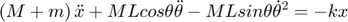
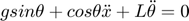
approximations - small thethas and derivative :
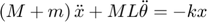
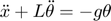
The state variable differential matrix equation:
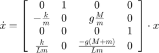
2 System modeling 2
the system's equation are:
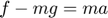
KVL:
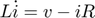
The state variable differential matrix equation:
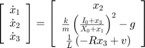
approximation - linear near the working point:
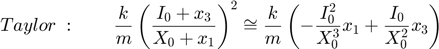
The linear state variable differential matrix equation:
![$$\left[\begin{array}{c}
\dot{x}_{1}\\
\dot{x}_{2}\\
\dot{x}_{3}
\end{array}\right]=\left[\begin{array}{ccc}
0 & 1 & 0\\
-\frac{k}{m}\frac{I_{0}^{2}}{X_{0}^{3}} & 0 & \frac{k}{m}\frac{I_{0}}{X_{0}^{2}}\\
0 & 0 & -\frac{R}{L}
\end{array}\right]\cdot\left[\begin{array}{c}
x_{1}\\
x_{2}\\
x_{3}
\end{array}\right]+\left[\begin{array}{c}
0\\
0\\
\frac{1}{L}
\end{array}\right]\cdot v$$](ex3_eq14127856759325935738.png)
The charcterized matrices and vectors of the system:
![$$C=\left[\begin{array}{ccc}
1 & 0 & 0\end{array}\right]\qquad B=\left[\begin{array}{c}
0\\
0\\
\frac{1}{L}
\end{array}\right]\qquad A=\left[\begin{array}{ccc}
0 & 1 & 0\\
-\frac{k}{m}\frac{I_{0}^{2}}{X_{0}^{3}} & 0 & \frac{k}{m}\frac{I_{0}}{X_{0}^{2}}\\
0 & 0 & -\frac{R}{L}
\end{array}\right]$$](ex3_eq09248016397700679215.png)
Transfer function at Laplace plane:
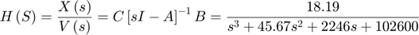
L = 0.508; R = 23.2; I_0 = 1.06; M = 1.75; X_0 = 4.36*10^-3; K = 2.9*10^-4; A = [0 1 0; (-K*I_0^2)/(M*X_0^3) 0 (K*I_0)/(M*X_0^2); 0 0 -R/L]; B = [0 0 1/L]'; C = [1 0 0]; D = 0; sys = ss(A, B, C, D); tf(sys)
ans =
18.19
-----------------------------------
s^3 + 45.67 s^2 + 2247 s + 1.026e05
Continuous-time transfer function.
3 Comparing two systems
A_1 = [0 1 0;0 0 1; -4 -5 -8]; B_1 = [0 0 4]'; C_1 = [1 0 0]; D_1 = 0; sys1 = ss(A_1, B_1, C_1, D_1); tf_sys1 = tf(sys1) A_2 = [0.5 0.5 0.7071;-0.5 -0.5 0.7071; -6.364 -0.7071 -8]; B_2 = [0 0 4]'; C_2 = [0.7071 1.2929 0]; D_2 = 0; sys2 = ss(A_2, B_2, C_2, D_2); tf_sys2 = tf(sys2)
tf_sys1 =
4
---------------------
s^3 + 8 s^2 + 5 s + 4
Continuous-time transfer function.
tf_sys2 =
5.657 s - 1.657
---------------------
s^3 + 8 s^2 + 5 s + 4
Continuous-time transfer function.
The two systems has the same transfer function.
4 State-system response
A_1 = [0 1 ;-2 -3];
B_1 = [0 1]';
C_1 = [1 0];
D_1 = 0;
x_0 = [1 0]';
t = 0:0.04:8; % 201 points
u_t = t*0;
sys1 = ss(A_1, B_1, C_1, D_1);
tf_sys1 = tf(sys1)
lsim(sys1,u_t,t,x_0)
tf_sys1 =
1
-------------
s^2 + 3 s + 2
Continuous-time transfer function.
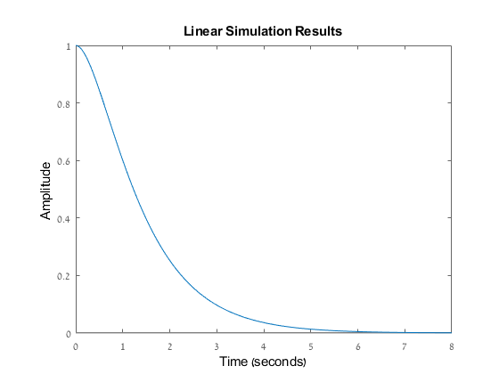 The reponse type is ZIR, so the transfer function converge to constant value and in this case to zero, as expected.
5 State-system response 2
A_1 = [0 1 0 ;0 0 1; -3 -2 -5]; B_1 = [0 0 1]'; C_1 = [1 0 0]; D_1 = 0; x_0 = [0 -1 1]'; t = 0:0.04:10; u_t = t*0; sys1 = ss(A_1, B_1, C_1, D_1); tf_sys1 = tf(sys1) lsim(sys1,u_t,t,x_0) t = 10; [V, D] = eig(A_1*t); TM = (V*diag(exp(diag(D))))* inv(V); x_10 = TM*x_0
tf_sys1 =
1
---------------------
s^3 + 5 s^2 + 2 s + 3
Continuous-time transfer function.
x_10 =
-0.2545 + 0.0000i
0.0418 + 0.0000i
0.1500 - 0.0000i
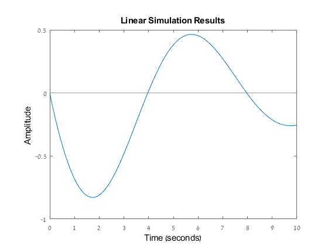 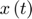 after 10 seconds get smaller and converge to zero and it fit with the response that is shown at section 2.